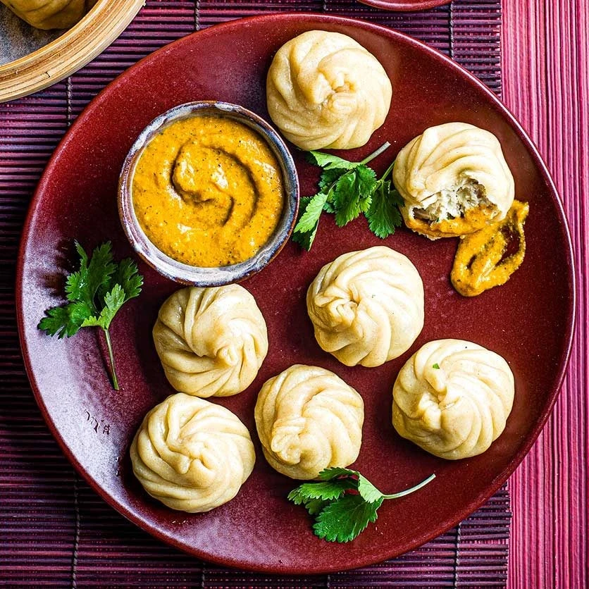

Momo

Description
Momo is a type of steamed dumpling with some form of filling. Although Momo is also consumed in Tibet and areas of different countries in Asia, this specific recipe is based on the traditional dish made in Nepal. The key differentiator between the Nepali recipe and others further afield is the dipping sauce. In Tibet, Momo are served with chili garlic sauce or pickled daikon, but in Nepal, they’re served with a homemade spicy tomato chutney called Achaar. For a saucy soupy momo option, jhol momo is the recipe you're looking for!
Ingredients
- 150g Plain flour
- 70ml Warm water
- 1 teaspoon Salt
- 1 Chicken breast, minced
- ½ Bunch of Coriander
- 1 inch Celery, finely chopped
- 2 Spring onions, finely chopped
- 1 Garlic cloves, minced
- 1 teaspoon Chilli powder
- 1 teaspoon Ground cumin
- ½ teaspoon Salt
- 1 teaspoon Olive oil
- ½ Tinned tomatoes
- 1 Chilli, deseeded
- 1 teaspoon Szechuan peppercorns, toasted
- 2 Garlic cloves
- 1 tsp Olive oil
- ½ Bunch coriander
- 1 teaspoon Ground cumin
Steps/Instruction
For The Wrappers
- Add the flour, salt, and water to a bowl. Add more water if it's too dry. Knead for 5 minutes to form an elastic dough. Set aside for 20 minutes in cling film.
- Roll out the dough into a long sausage shape. Cut the dough into 1 inch chunks.
- Using a rolling pin, roll out individual wrappers into circles, repeat and set aside. Cover with cling film to avoid the wrappers going dry.
For The Filling
- In a bowl, combine the filling ingredients and mix well to form a paste.
Folding The Dumplings
- To fill the Momo, take a wrapper and use 1 to 2 teaspoon of mixture and place it in the centre of the wrapper. Then slowly crease the edge of the wrapper pinching around the filling, until the circle is complete.
Cooking
- Place the dumplings in a steamer and cook for 8 minutes.
For The Achaar Sauce
- To make the achaar sauce, place all the ingredients in a food processor or a blender and combine. Heat up in a frying pan or microwave for a bit of warmth.
Serving
- Put the Momo on a plate with the dipping sauce, and serve up!
Recipe Credit: Myriad Recipes by Emily Roz
Go Back